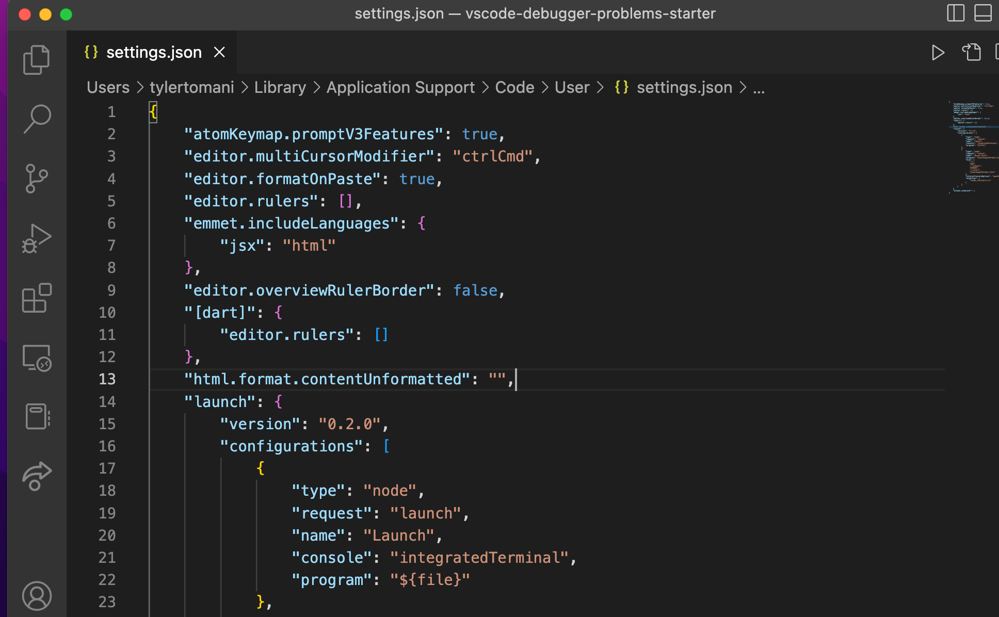
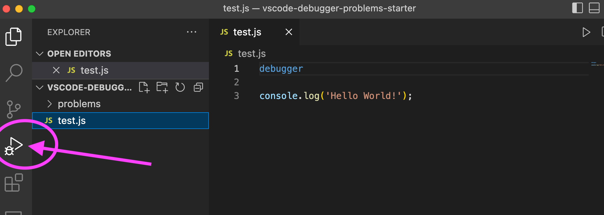
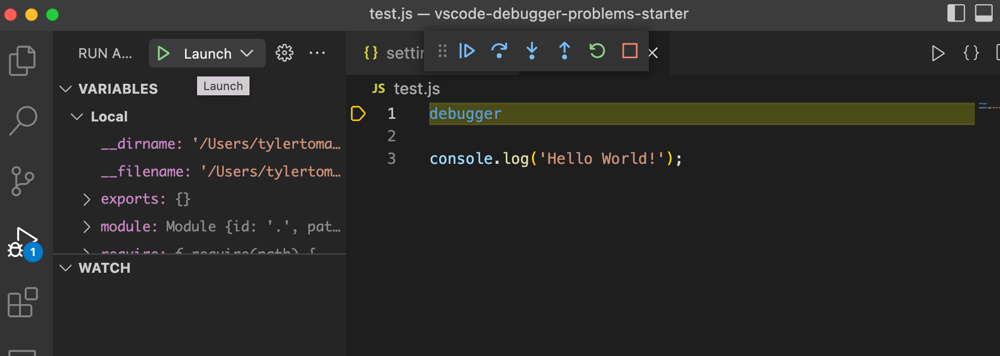

Vs code debugger allows you to step through code line by line. In vs code hit,
Open User Settings (JSON)
You will see something like this
Add the following "launch" key to the settings JSON object.
This will create two configurations for launching the VSCode debugger. One to test individual Node.js files called "Launch", and one to test projects with mocha set up called "Mocha Tests"
JSON has similar syntax of a JavaScript object but one of the main differences is that all the keys must be wrapped in double quotations.
"launch": {
"version": "0.2.0",
"configurations": [
{
"type": "node",
"request": "launch",
"name": "Launch",
"console": "integratedTerminal",
"program": "${file}"
},
{
"type": "node",
"request": "launch",
"name": "Mocha Tests",
"program": "${workspaceFolder}/node_modules/mocha/bin/_mocha",
"args": [
"-u",
"bdd",
"--timeout",
"999999",
"--colors",
"${workspaceFolder}/test"
],
"internalConsoleOptions": "openOnSessionStart",
"skipFiles": [
"<node_internals>/**"
]
}
]
}
Open the test.js file in this project and click the debugging tab on the left side navigation bar (the play button with a bug).
If you don't have the navigation bar all the way to the left, make sure you have View < Appearance < Show Activity Bar checked.
Also, make sure that the dropdown option next to the green play button is set to Launch. Launch is the name you set to the launch configuration in the settings.json file.
In this phase, you'll be using the VSCode debugger to debug the problems in the problems folder.
Go through each file one by one to debug all the errors. There could be multiple errors in one file, so make sure that the code behaves as you expect before moving onto the next file.
Instead of using console.log to debug, make sure to use the debugger.
If you spot the error before using the debugger, make sure to validate the solution to the error by placing an appropriate debugger, running it, and explaining to your partner that whatever the debugger exposes supports your solution. Do not fix the error until you do this exercise.
Start debugging!